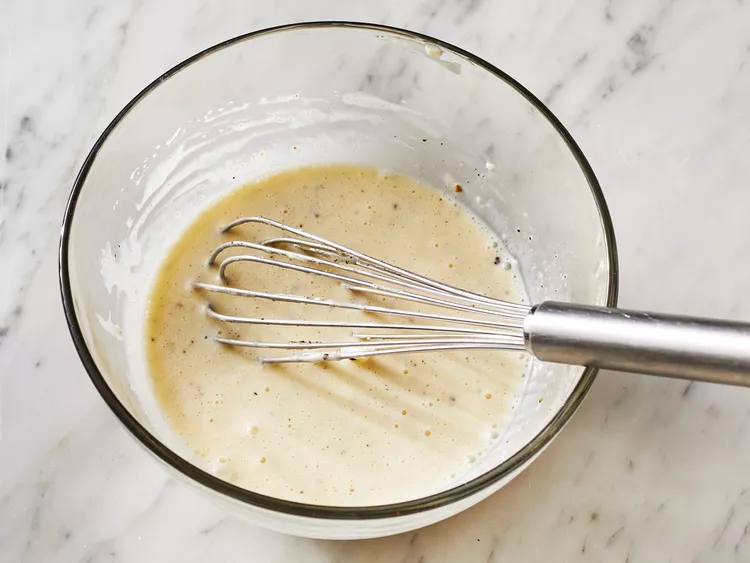

Coleslaw Dressing

A creamy coleslaw dressing that can be made with ingredients you already have! You can pour it immediately over a 14-ounce package of coleslaw mix or refrigerate until needed.
Ingredients:
- ½ cup mayonnaise
- 2 tablespoons white sugar
- 1 ½ tablespoons lemon juice
- 1 tablespoon vinegar
- ½ teaspoon ground black pepper
- ¼ teaspoon salt
Steps:
- Whisk mayonnaise, sugar, lemon juice, vinegar, pepper, and salt together in a bowl until smooth and creamy.
- Store in an airtight container.